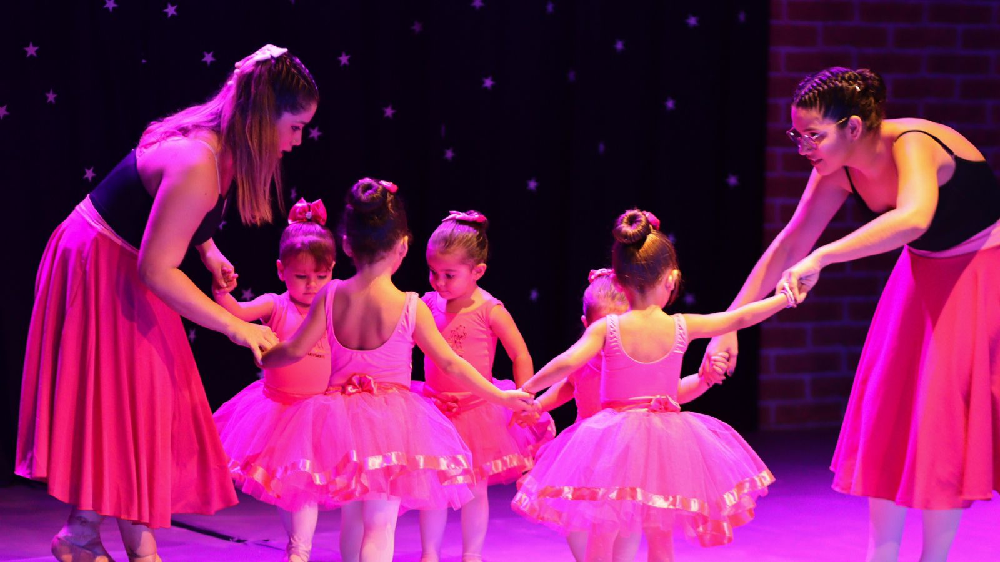
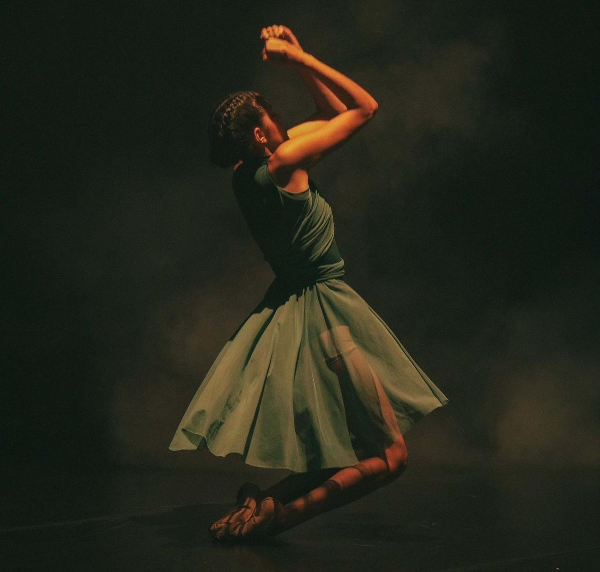

Projetos
Fotografias







Giselle Caroline Rodrigues da Silva, diretora geral, professora e fundadora do Centro de Movimento Giselle Rodrigues, é uma apaixonada pela arte do movimento e pela promoção da saúde através da dança. Graduada em Educação Física pela Universidade Estadual de Roraima em 2020, ela traz consigo um profundo conhecimento acadêmico aliado à sua vasta experiência prática.
Sua jornada na dança começou aos 4 anos de idade, um marco que desencadeou uma trajetória dedicada ao aprimoramento técnico e à exploração criativa no universo do ballet. Sua especialização em Ballet com Metodologia Lúdica é reflexo de seu compromisso em tornar a aprendizagem da dança uma experiência dinâmica, envolvente e acessível para todas as idades e habilidades. Como diretora geral, Giselle lidera com paixão e dedicação, buscando sempre inovar e elevar os padrões de excelência no ensino da dança. Seu Centro de Movimento é mais do que uma escola de dança; é um espaço de inspiração, crescimento pessoal e celebração da expressão corporal.
Fotografias
Para todas as idades
Marque sua aula experimental aqui!Graduado em Educação Física e fascinado pelo movimento desde cedo, mergulhou no universo da dança com paixão e determinação. Seu percurso começou nas vibrantes Danças Urbanas, onde encontrou seu ritmo e estilo únicos. Ao longo dos anos, explorou os intricados movimentos do Jazz, a disciplina do Ballet e a expressividade do Contemporâneo.
Atualmente ministra as aulas de Dança Contemporânea.

Desde junho de 2007, ela embarcou em uma jornada de descoberta e paixão pela dança do ventre. Inicialmente, frequentou turmas regulares e mergulhou em uma variedade de workshops, mostras e espetáculos, explorando as nuances da cultura árabe e suas danças fascinantes. A partir de 2015, seu talento e dedicação a levaram aos palcos profissionais, onde brilhou com graça e técnica. Em 2017, alcançou a qualificação para compartilhar sua expertise como professora de dança do ventre. Desde então, tem conduzido aulas em turmas regulares e em cursos de férias dedicados à arte da dança do ventre. Sua jornada como bailarina é marcada por um compromisso contínuo com a excelência, buscando constantemente se aprimorar por meio de cursos e workshops. Seu objetivo é manter-se atualizada e alinhada com as demandas em evolução do mercado, proporcionando aos seus alunos uma experiência enriquecedora e autêntica na dança do ventre.
Atualmente ministra as aulas de Dança do Ventre.
Graduado em Educação Física.
Atualmente é professor de Jazz.